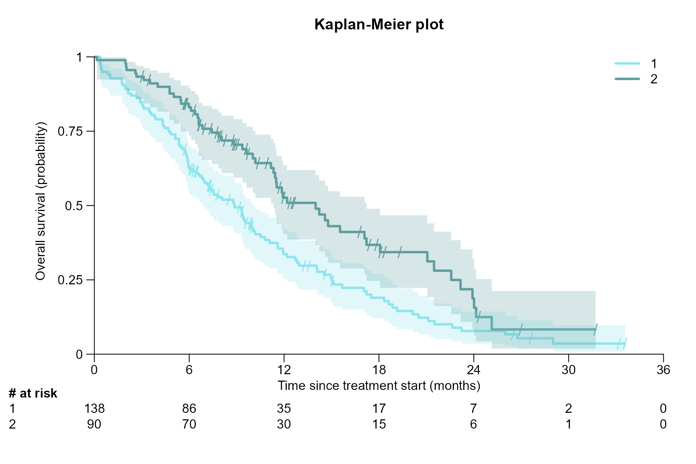
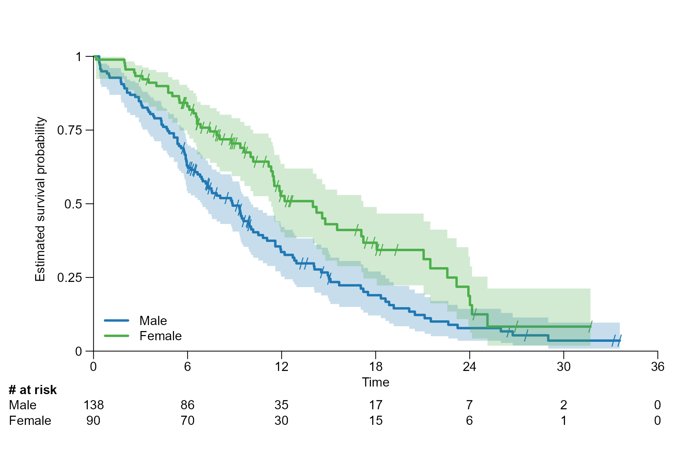
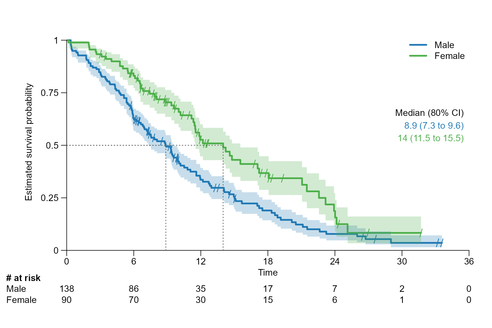

After inserting the survfit{survival} object into
surv.plot{survSAKK}, we can create simple survival curves,
allowing to visualize survival patterns and incorporate various
statistics in our plot.
To show some benefit of this function, NCCTG Lung Cancer Data, available in the survival package is used.
Data
# Load required libraries
library(survSAKK)
library(survival)
# Load lung data
lung <- survival::lung
# Compute survival time in months and years
lung$time.m <- lung$time/365.25*12
lung$time.y <- lung$time/365.25
# Create survival objects
fit.lung.d <- survfit(Surv(time, status) ~ 1, data = lung)
fit.lung.m <- survfit(Surv(time.m, status) ~ 1, data = lung)
fit.lung.arm.m <- survfit(Surv(time.m, status) ~ sex, data = lung)
fit.lung.arm.y <- survfit(Surv(time.y, status) ~ sex, data = lung)Drawing basic survival plot
surv.plot(fit.lung.m)
surv.plot(fit.lung.arm.m)Customisation colours, figure title and axis names
surv.plot(fit.lung.arm.m,
col = c("cadetblue2", "cadetblue"),
main = "Kaplan-Meier plot",
xlab = "Time since treatment start (months)",
ylab = "Overall survival (probability)"
)
Customisation of legend
# Chose legend position and names of the arms
surv.plot(fit.lung.arm.m,
legend.position = "bottomleft",
legend.name = c("male", "female")
)
Customisation of ticks and axis limits
surv.plot(fit.lung.arm.m,
legend.name = c("male", "female"),
xticks = seq(0, 36, by = 12),
yticks = seq(0, 1, by = 0.2)
)
# Cut curve at 24 months
surv.plot(fit.lung.arm.m,
legend.name = c("male", "female"),
xticks = seq(0, 24, by = 6)
)


Customisation of the marging area
In this example we change the margins and shift the y axis label outwards.
surv.plot(fit.lung.arm.m,
legend.name = c("male", "female"),
margin.bottom = 3.5,
margin.left = 7,
margin.top = 1,
margin.right = 2,
ylab.pos = 4
)
Customisation of time.unit and y.unit
The parameter time.unit can be set as follows:
"day", "week",
"month","year".
Note the following:
The time unit in
time.unitneeds to correspond to the time unit which was used to calculate the survival objectfit.If
time.unit = "month"x ticks are automatically chosen by intervals of 6 months. Whereas fortime.unit = "year"the x ticks are chosen by intervals of 1.
surv.plot(fit.lung.arm.m,
time.unit = "month",
y.unit = "percent",
legend.name = c("male", "female")
)
Drawing risk table
Per default the risk table is provided below the Kaplan-Meier plot. It provides information about the number of patients at risk at different time points.


Drawing segment
This section explains how to highlight a specific quantile or time point as a segment in the survival curve and how to adjust segment annotation.
Drawing segment line for a specific quantile
Drawing a segment line for the median, which corresponds to 0.5 quantile.

surv.plot(fit.lung.arm.m,
legend.name = c("male", "female"),
segment.quantile = 0.5,
time.unit = "month"
)
Drawing a segment line for 0.75 quantile.

Change position of segment annotation
The parameter segment.annotation can take the following
values: c(x,y),"bottomleft",
"left", "right", "top",
"none"
surv.plot(fit.lung.arm.m,
legend.name = c("male", "female"),
segment.timepoint = 18,
segment.annotation = "top",
time.unit = "month"
)
Customisation of segment title, font, size, and colour
surv.plot(fit.lung.arm.m,
col = c("cadetblue2", "cadetblue"),
legend.name = c("male", "female"),
time.unit = "month",
segment.quantile = 0.5,
segment.font = 3,
segment.main.font = 2,
segment.main = "Median PFS in months (95% CI)",
segment.cex = 0.8,
segment.annotation.col = "darkgray"
)
Add several segment lines, change line type
Note that segment.annotation needs to be set to “none”.
Otherwise the code does not work.
# several quantiles
surv.plot(fit.lung.arm.m,
legend.name = c("male", "female"),
segment.quantile = c(0.75, 0.5),
segment.annotation = "none",
time.unit = "month"
)
# several time points
surv.plot(fit.lung.arm.m,
legend.name = c("male", "female"),
segment.timepoint = c(6, 18),
segment.annotation = "none",
time.unit = "month"
)
Modify segment line type, line width and text spacing
surv.plot(fit.lung.arm.m,
legend.name = c("male", "female"),
time.unit = "month",
segment.quantile = 0.5,
segment.lwd = 2,
segment.lty = "dashed",
segment.annotation.space = 0.1
)
Modify confidence interval
surv.plot(fit.lung.arm.m,
legend.name = c("male", "female"),
segment.quantile = 0.5,
conf.int = 0.9
)
Include statistics
There are three options for the parameter stat to
display statistics:
logrank: gives the p value of the log rank test calculated usingsurvdiff{survival}.coxph: gives the hazard ratio (HR) and its 95% CI of the conducted Cox proportional hazards regression usingcoxph{survival}.coxph_logrank: is a combination oflogrankandcoxph.

Modify stat position, colour, text size, and text font
surv.plot(fit.lung.arm.m,
legend.name = c("male", "female"),
stat = "logrank",
stat.position = "right",
stat.col = "darkgrey",
stat.cex = 0.8,
stat.font = 3
)
Choose reference arm
surv.plot(fit.lung.arm.m,
legend.name = c("female","male"),
stat = "coxph_logrank",
reference.arm = 2
)
Choose confidence level
surv.plot(fit.lung.arm.m,
legend.name = c("male", "female"),
stat = "coxph_logrank",
stat.conf.int = 0.9
)
Use stratification
In the next example the ECOG performance status is used as stratification factor for the calculation of the statistics.
fit_lung_stratified <- survfit(Surv(time.m, status) ~ sex + strata(ph.ecog), data = lung)
surv.plot(fit.lung.arm.m,
stat.fit = fit_lung_stratified,
legend.name = c("male", "female"),
stat = "coxph_logrank"
)
Multiple survival plots
We present to ways how to combine plots: via
par(mfrow=c()) and via split.screen()
par(mfrow=c(2,2))
# Plot 1
surv.plot(fit.lung.d)
# Plot 2
surv.plot(fit.lung.arm.m,
time.unit = "month")
# Plot 3
surv.plot(fit.lung.arm.y,
col = c("cadetblue2", "cadetblue"),
time.unit = "year",
stat = "coxph")
par(mfrow=c(1,1))
par(mfrow=c(2,1))
# Plot 1
surv.plot(fit.lung.arm.m,
col = c("cadetblue2", "cadetblue"),
time.unit = "month",
segment.quantile = 0.5)
# Plot 2
surv.plot(fit.lung.arm.m,
col = c("cadetblue2", "cadetblue"),
time.unit = "month",
segment.timepoint = 6)
split.screen(c(2,1))
#> [1] 1 2
screen(1)
surv.plot(fit.lung.arm.m,
time.unit = "month",
segment.quantile = 0.5,
segment.confint = FALSE)
screen(2)
surv.plot(fit.lung.arm.m,
time.unit = "month",
segment.quantile = 0.75,
segment.confint = FALSE)
close.screen(all = TRUE)